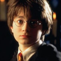
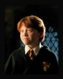
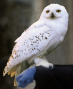
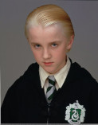

Selecione um personagem
- 

- 

- 
- 

Harry Potter
Órfão desde bebê, Harry descobre aos 11 anos que é na verdade um bruxo e que seus pais foram assassinados por um poderoso bruxo das trevas chamado Lord Voldemort. Ele é convidado a estudar na Escola de Magia e Bruxaria de Hogwarts, onde conhece seus amigos Rony Weasley e Hermione Granger.